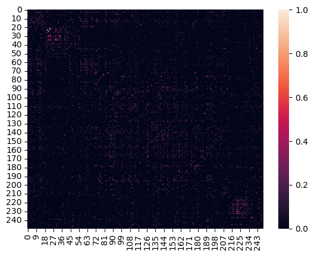
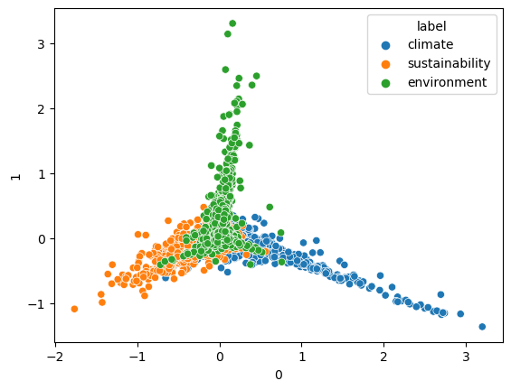
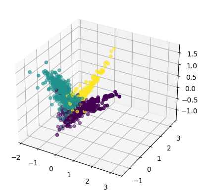

import wikipedia
import nltk
import string
from nltk.stem import WordNetLemmatizer
from nltk.stem import PorterStemmer
from nltk.sentiment import SentimentIntensityAnalyzer
import pandas as pd
from sklearn.feature_extraction.text import CountVectorizer
import numpy as npImport
Set user parameters
# PARAMETERS
label_list=['climate','sustainability','environment']
max_num_pages=25
sentence_per_chunk=1
min_sentence_length=20
# GET STOPWORDS
# from nltk.corpus import stopwords
stop_words=nltk.corpus.stopwords.words('english')
# INITALIZE STEMMER+LEMITZIZER+SIA
sia = SentimentIntensityAnalyzer()
stemmer = PorterStemmer()
lemmatizer = WordNetLemmatizer()Define text cleaning function
def clean_string(text):
# #FILTER OUT UNWANTED CHAR
new_text=""
# keep=string.printable
keep=" abcdefghijklmnopqrstuvwxyz0123456789"
for character in text:
if character.lower() in keep:
new_text+=character.lower()
else:
new_text+=" "
text=new_text
# print(text)
# #FILTER OUT UNWANTED WORDS
new_text=""
for word in nltk.tokenize.word_tokenize(text):
if word not in nltk.corpus.stopwords.words('english'):
#lemmatize
tmp=lemmatizer.lemmatize(word)
# tmp=stemmer.stem(tmp)
# update word if there is a change
# if(tmp!=word): print(tmp,word)
word=tmp
if len(word)>1:
if word in [".",",","!","?",":",";"]:
#remove the last space
new_text=new_text[0:-1]+word+" "
else: #add a space
new_text+=word.lower()+" "
text=new_text.strip()
return textPreform a wikipedia crawl
#INITIALIZE
corpus=[] # list of strings (input variables X)
targets=[] # list of targets (labels or response variables Y)
#--------------------------
# LOOP OVER TOPICS
#--------------------------
for label in label_list:
#SEARCH FOR RELEVANT PAGES
titles=wikipedia.search(label,results=max_num_pages)
print("Pages for label =",label,":",titles)
#LOOP OVER WIKI-PAGES
for title in titles:
try:
print(" ",title)
wiki_page = wikipedia.page(title, auto_suggest=True)
# LOOP OVER SECTIONS IN ARTICLE AND GET PAGE TEXT
for section in wiki_page.sections:
text=wiki_page.section(section); #print(text)
#BREAK IN TO SENTANCES
sentences=nltk.tokenize.sent_tokenize(text)
counter=0
text_chunk=''
#LOOP OVER SENTENCES
for sentence in sentences:
if len(sentence)>min_sentence_length:
if(counter%sentence_per_chunk==0 and counter!=0):
# PROCESS COMPLETED CHUNK
# CLEAN STRING
text_chunk=clean_string(text_chunk)
# REMOVE LABEL IF IN STRING (MAKES IT TOO EASY)
text_chunk=text_chunk.replace(label,"")
# REMOVE ANY DOUBLE SPACES
text_chunk=' '.join(text_chunk.split()).strip()
#UPDATE CORPUS
corpus.append(text_chunk)
#UPDATE TARGETS
score=sia.polarity_scores(text_chunk)
target=[label,score['compound']]
targets.append(target)
#print("TEXT\n",text_chunk,target)
# RESET CHUNK FOR NEXT ITERATION
text_chunk=sentence
else:
text_chunk+=sentence
#print("--------\n", sentence)
counter+=1
except:
print("SOMETHING WENT WRONG:", title); Pages for label = climate : ['Climate', 'Climate change', 'Köppen climate classification', 'Oceanic climate', 'Subarctic climate', 'Mediterranean climate', 'Temperate climate', 'Semi-arid climate', 'Tropical climate', 'Climatize', 'Climate action', 'Humid subtropical climate', 'Tropical rainforest climate', 'Desert climate', 'Cold climate', 'Climatology', 'Climate of Saudi Arabia', 'Organisation climate', 'Climate classification', 'Climate of Antarctica', 'Climate change and agriculture', 'The Climate Fresk', 'Climate change denial', 'Continental climate', 'Humid climate']
Climate
Climate change
Köppen climate classification
SOMETHING WENT WRONG: Köppen climate classification
Oceanic climate
SOMETHING WENT WRONG: Oceanic climate
Subarctic climate
SOMETHING WENT WRONG: Subarctic climate
Mediterranean climate
Temperate climate
SOMETHING WENT WRONG: Temperate climate
Semi-arid climate
Tropical climate
Climatize
SOMETHING WENT WRONG: Climatize
Climate action
SOMETHING WENT WRONG: Climate action
Humid subtropical climate
Tropical rainforest climate
SOMETHING WENT WRONG: Tropical rainforest climate
Desert climate
Cold climate
SOMETHING WENT WRONG: Cold climate
Climatology
Climate of Saudi Arabia
Organisation climate
Climate classification
Climate of Antarctica
Climate change and agriculture
SOMETHING WENT WRONG: Climate change and agriculture
The Climate Fresk
Climate change denial
Continental climate
Humid climate
Pages for label = sustainability : ['Sustainability', 'Sustainable development', 'Sustainable energy', 'Weak and strong sustainability', 'Self-sustainability', 'Sustainer', 'Sustainability (journal)', 'Sustainable agriculture', 'Corporate sustainability', 'Sustainable design', 'Index of sustainability articles', 'Micro-sustainability', 'Dow Jones Sustainability Indices', 'Sustainability reporting', 'Sustainability measurement', 'Sustainability accounting', 'Sustainable living', 'Fiscal sustainability', 'Sustainability organization', 'Sustainability Bonds', 'Cultural sustainability', 'Robert Ayres (scientist)', 'Sustainable Development Goals', 'Sustainable gardening', 'Sustainability science']
Sustainability
Sustainable development
Sustainable energy
Weak and strong sustainability
Self-sustainability
Sustainer
SOMETHING WENT WRONG: Sustainer
Sustainability (journal)
Sustainable agriculture
Corporate sustainability
Sustainable design
Index of sustainability articles
SOMETHING WENT WRONG: Index of sustainability articles
Micro-sustainability
Dow Jones Sustainability Indices
Sustainability reporting
Sustainability measurement
Sustainability accounting
Sustainable living
Fiscal sustainability
Sustainability organization
Sustainability Bonds
Cultural sustainability
Robert Ayres (scientist)
Sustainable Development Goals
Sustainable gardening
Sustainability science
Pages for label = environment : ['Environment', 'Natural environment', 'Market environment', 'Biophysical environment', 'Environment (systems)', 'Deployment environment', 'Depositional environment', 'Social environment', 'Environment Agency', 'Environment minister', 'Environment variable', 'Integrated development environment', 'Atmospheric Environment', 'Built environment', 'Secretary of State for Environment, Food and Rural Affairs', 'Operating environment', 'Environment Secretary', 'Desktop environment', 'Virtual reality', 'Player versus environment', 'Phonetic environment', 'Secretary of State for the Environment, Transport and the Regions', 'Destructible environment', 'Environment Council', 'Narrative environment']
Environment
SOMETHING WENT WRONG: Environment
Natural environment
Market environment
Biophysical environment
Environment (systems)
Deployment environment
Depositional environment
Social environment
Environment Agency
SOMETHING WENT WRONG: Environment Agency
Environment minister
Environment variable
Integrated development environment
Atmospheric Environment
Built environment
Secretary of State for Environment, Food and Rural Affairs
SOMETHING WENT WRONG: Secretary of State for Environment, Food and Rural Affairs
Operating environment
Environment Secretary
SOMETHING WENT WRONG: Environment Secretary
Desktop environment
Virtual reality
SOMETHING WENT WRONG: Virtual reality
Player versus environment
Phonetic environment
Secretary of State for the Environment, Transport and the Regions
Destructible environment
Environment Council
Narrative environmentSave results
#SANITY CHECKS AND PRINT TO FILE
print("number of text chunks = ",len(corpus))
print("number of targets = ",len(targets))
tmp=[]
for i in range(0,len(corpus)):
tmp.append([corpus[i],targets[i][0],targets[i][1]])
df=pd.DataFrame(tmp)
df=df.rename(columns={0: "text", 1: "label", 2: "sentiment"})
print(df)
df.to_csv('wiki-crawl-results.csv',index=False)number of text chunks = 4697
number of targets = 4697
text label \
0 ancient greek inclination commonly defined wea... climate
1 standard averaging period 30 year period may u... climate
2 also includes statistic average magnitude day ... climate
3 intergovernmental panel change ipcc 2001 gloss... climate
4 classical period 30 year defined world meteoro... climate
... ... ...
4692 bumptop project experimental desktop environment
4693 guild war narrates story displaying game cut s... environment
4694 enhance replayability mission often completed ... environment
4695 character playing mode often protected killed ... environment
4696 example game case eve online player often ambu... environment
sentiment
0 0.0000
1 0.0000
2 0.0000
3 -0.1027
4 0.0000
... ...
4692 0.0000
4693 -0.7184
4694 0.0000
4695 -0.6124
4696 0.0000
[4697 rows x 3 columns]#RELOAD FILE AND PRETEND THAT IS OUR STARTING POINT
df=pd.read_csv('wiki-crawl-results.csv')
print(df.shape)
#CONVERT FROM STRING LABELS TO INTEGERS
labels=[]; #y1=[]; y2=[]
y1=[]
for label in df["label"]:
if label not in labels:
labels.append(label)
print("index =",len(labels)-1,": label =",label)
for i in range(0,len(labels)):
if(label==labels[i]):
y1.append(i)
y1=np.array(y1)
# CONVERT DF TO LIST OF STRINGS
corpus=df["text"].to_list()
y2=df["sentiment"].to_numpy()
print("number of text chunks = ",len(corpus))
print(corpus[0:3])(4697, 3)
index = 0 : label = climate
index = 1 : label = sustainability
index = 2 : label = environment
number of text chunks = 4697
['ancient greek inclination commonly defined weather averaged long period', 'standard averaging period 30 year period may used depending purpose', 'also includes statistic average magnitude day day year year variation']Vectorize
# INITIALIZE COUNT VECTORIZER
# minDF = 0.01 means "ignore terms that appear in less than 1% of the documents".
# minDF = 5 means "ignore terms that appear in less than 5 documents".
vectorizer=CountVectorizer(min_df=0.001)
# RUN COUNT VECTORIZER ON OUR COURPUS
Xs = vectorizer.fit_transform(corpus)
X=np.array(Xs.todense())
#CONVERT TO ONE-HOT VECTORS
maxs=np.max(X,axis=0)
X=np.ceil(X/maxs)
# DOUBLE CHECK
print(X.shape,y1.shape,y2.shape)(4697, 2505) (4697,) (4697,)Compute distance matrix
num_rows_keep=250
index=np.sort(np.random.choice(X.shape[0], num_rows_keep, replace=False))
# print(y1[index])
#print(index)
tmp1=X[index, :]
# print(tmp1.shape,tmp1.dtype,tmp1[:,].shape)
#COMPUTE DISTANCE MATRIX
dij=[]
#LOOP OVER ROWS
for i in range(0,tmp1.shape[0]):
tmp2=[]
#LOOP OVER ROWS
for j in range(0,tmp1.shape[0]):
#EXTRACT VECTORS
vi=tmp1[i,:]
vj=tmp1[j,:]
#print(vi.shape,vj.shape)
#COMPUTE DISTANCES
dist=np.dot(vi, vj)/(np.linalg.norm(vi)*np.linalg.norm(vj)) #cosine sim
#dist=np.linalg.norm(vi-vj) #euclidean
# BUILD DISTANCE MATRIX
if(i==j or np.max(vi) == 0 or np.max(vj)==0):
tmp2.append(0)
else:
tmp2.append(dist)
dij.append(tmp2); #print(dij)
# raise
dij=np.array(dij)
#normalize
# dij=(dij-np.min(dij))/(np.max(dij)-np.min(dij))
#Lower triangle of an array.
# dij=np.sort(dij,axis=0)
# dij=np.sort(dij,axis=1)
# dij=np.tril(dij, k=-1)
import seaborn as sns
# sns.heatmap(np.exp(dij), annot=False) #, linewidths=.05)
sns.heatmap(dij, annot=False) #, linewidths=.05)
print(dij.shape)
print(dij)(250, 250)
[[0. 0.03779645 0. ... 0. 0.06681531 0. ]
[0.03779645 0. 0. ... 0. 0. 0. ]
[0. 0. 0. ... 0. 0. 0. ]
...
[0. 0. 0. ... 0. 0. 0. ]
[0.06681531 0. 0. ... 0. 0. 0.20412415]
[0. 0. 0. ... 0. 0.20412415 0. ]]
PCA
from sklearn.decomposition import PCA
import matplotlib.pyplot as plt
# COMPUTE PCA WITH 10 COMPONENTS
pca = PCA(n_components=10)
pca.fit(X)
print(pca.explained_variance_ratio_)
print(pca.singular_values_)
# GET PRINCIPLE COMPONENT PROJECTIONS
principal_components = pca.fit_transform(X)
df2 = pd.DataFrame(data = principal_components) #, columns = ['PC1','PC2','PC3','PC4','PC5'])
df3=pd.concat([df2,df['label']], axis=1)
# FIRST TWO COMPONENTS
sns.scatterplot(data=df2, x=0, y=1,hue=df["label"])
plt.show()
#3D PLOT
ax = plt.axes(projection='3d')
ax.scatter3D(df2[0], df2[1], df2[2], c=y1);
plt.show()
#PAIRPLOT
sns.pairplot(data=df3,hue="label") #.to_numpy()) #,hue=df["label"]) #, hue="time")
plt.show()[0.01313291 0.01182663 0.00942805 0.00829692 0.00735429 0.00656916
0.00608396 0.00590203 0.00556397 0.00521897]
[26.06216261 24.7320714 22.08212724 20.71516278 19.50294883 18.43253276
17.73875521 17.47152043 16.96376793 16.42942223]

/Users/isfarbaset/anaconda3/lib/python3.11/site-packages/seaborn/axisgrid.py:118: UserWarning: The figure layout has changed to tight
self._figure.tight_layout(*args, **kwargs)